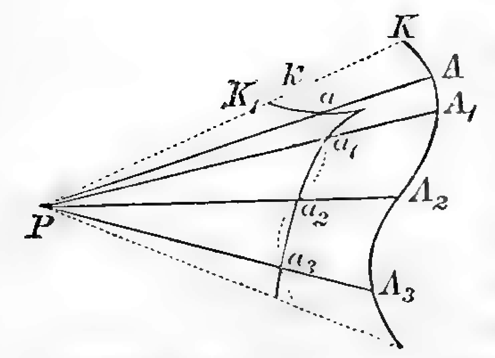

Section 2: Multiplication of Curves¶
Julius Petersen — Methods and Theories (Authorized Translation by Sophus Haagensen, 1879 · pp. 22–27)
Multiplication of Curves (Homothety, pp. 22–27, Problems 117–149)¶
[pp. 22–24] Take a fixed point \(P\) and join it to an arbitrary point \(a\) of a given curve \(k\). If along the straight line \(Pa\) we determine \(A\) such that \(PA : Pa = m : n\)—either on the same side of \(P\) (multiplication by \(+\frac{m}{n}\)) or on the opposite side (multiplication by \(-\frac{m}{n}\))—the locus of \(A\) is a curve \(K\) similar and similarly situated (homothetic) to \(k\), with \(P\) as centre of similitude (a pure specialization of Chapter III’s revolution with \(v = 0^\circ\) or \(180^\circ\)):


Multiplying a Straight Line: Yields a parallel straight line whose distance from \(P\) is multiplied by \(\pm \frac{m}{n}\).
Multiplying a Circle: Yields a circle whose centre and radius are both multiplied from \(P\) by \(\pm \frac{m}{n}\). Conversely, any two unequal circles have two centres of similitude—the external centre (dividing the line of centres externally in ratio \(+R_1 : R_2\)) and the internal centre (dividing it internally in ratio \(-R_1 : R_2\)).
Intersections With Scaled Curves (Problems 117–145): To draw through \(P\) a secant cut by two curves \(k, K_1\) in segments \(Pa : PA = n : m\), multiply \(k\) from \(P\) by \(\pm \frac{m}{n}\) and intersect with \(K_1\)!